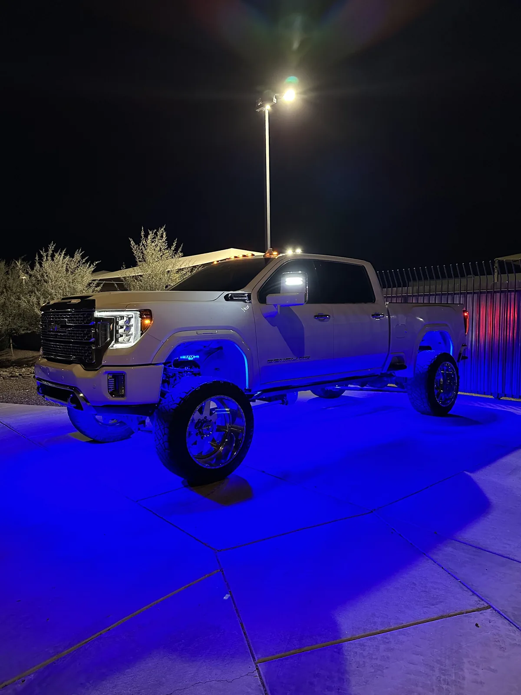
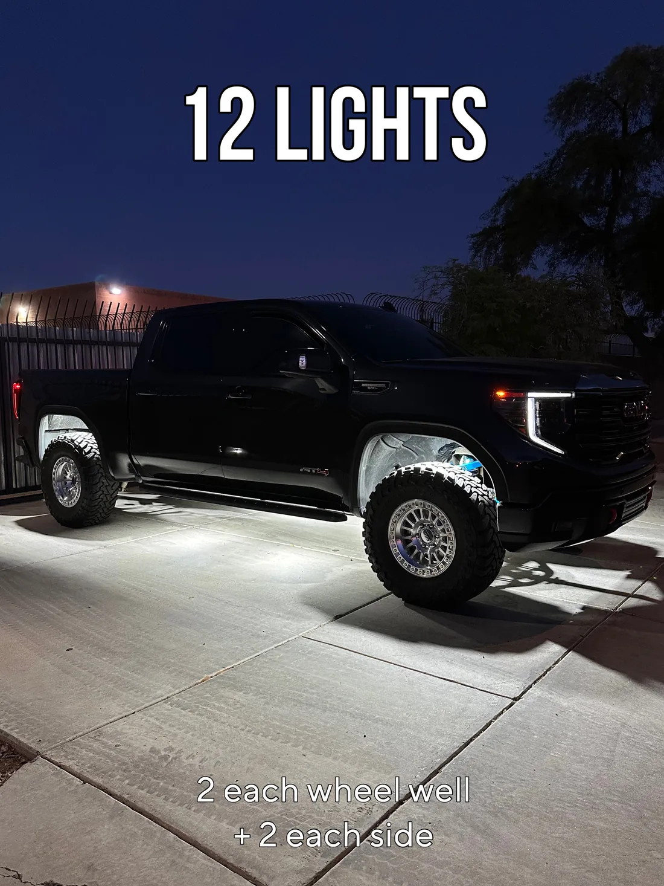
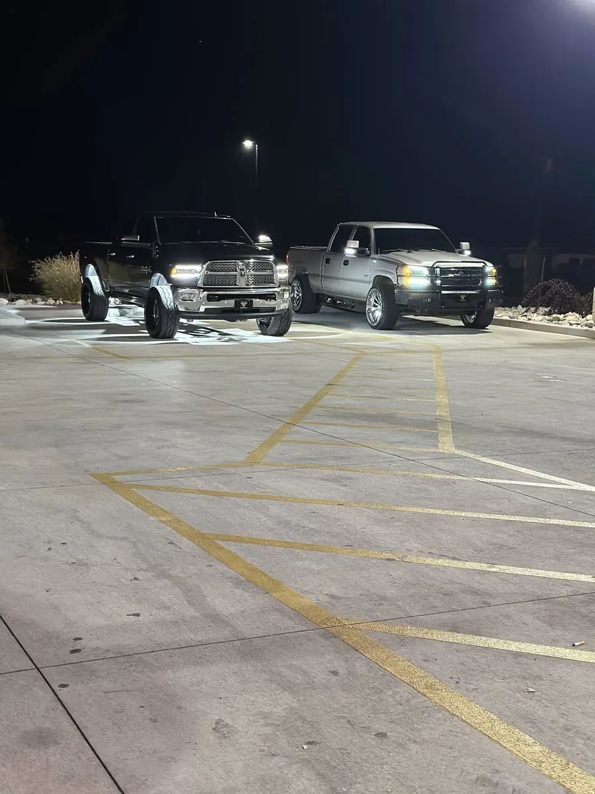

DIY Wiring
84-Chip Pure White Rock Lights
- 84 LED Chip
- 20 W
- Pack Of 4
$55 pack of 4





ITM Customs · Mesa, AZ
Most of what we light is a pickup, and on a truck the layout matters as much as the light. Here's where every light goes at 8, 16, 20 and 30, so you can pick a count before you buy or book.
A four-light kit lights the front wheel wells. On a full-size pickup, four lights leave the doors and bed in shadow, and the truck looks like it has spotlights under it instead of a glow.
Trucks are long and they sit high, so the light has farther to travel to the ground and more length to cover.
Every photo below is a real ITM install, with where the lights went written on it. Use it like a menu.




The count photos put the extra eight lights on the sides. This GMC runs 16 of our 219-chip lights differently: two above each tire, two on each side and two on each bumper. Moving four lights to the bumpers lights the front and the tailgate instead of the doors, which suits a truck that tows.
The layouts build on each other. Each step up keeps everything from the last one and adds a zone.
| Lights | Where They Go | What It Fixes |
|---|---|---|
| 8 | 2 in each wheel well | Lights the tires and the ground at each corner |
| 12 | Wheel wells, plus 2 on each side | Fills the dark gap under the doors |
| 16 | Wheel wells, plus 4 on each side | An even glow down the full length of a crew cab |
| 20 | 16, plus 2 on each bumper | Lights the front and the tailgate, handy for hitching up |
| 22 | 20, plus 2 in the grille | Adds glow at the front end |
| 26 | Wheel wells, 5 per side, 3 per bumper, 2 in the grille | Brighter sides and bumpers on a long truck |
| 30 | 26, plus 4 down the middle | Lights the ground under the center of the truck |
Start with how you use the truck. These are the counts we'd run.
Not sure? Book the install and tell us how you use the truck. We'll quote the count we'd run before anything gets mounted.
For a white glow, the 84-chip pack is the brightest light you wire yourself, and the 219-chip kit comes in counts up to 24. For color, the RGBW kit runs up to 20 lights from one app. For white and amber in one light, there's the switchback kit. Full comparison on our rock lights page.
$55 pack of 4

$640 16 lights

$700 16 lights
$205 4 lights
The length of a truck is what makes rock lights harder than they look. Sixteen lights spread from bumper to bumper means long wire runs, and each run has to be done right.
That's the part we're picky about. See how we wire every install.
Every light we put on a vehicle gets the same five things. None of them are extras, and none of them depend on who's working that day.

Fused, every circuit
Each circuit gets its own fuse, so a short pops a fuse instead of cooking the wiring or the light.
Heat-sealed connections
Every splice is sealed against Arizona heat, monsoon water and the pressure washer.
Your lights or ours
Bring a kit you bought from us or one you bought somewhere else, or we supply the lights.
Tested before you leave
We turn on every light with you at pickup, so you see it working before you drive away.

Lifetime warranty on installs
Every install we do is covered for life. Kits you install yourself are covered for the product, case by case.
Trucks running our lights, and what went on each one.

A professional lighting and sound installer put 16 ITM 72-chip lights on a customer’s truck and posted the wiring, the wheel wells and the finished glow.
See The Build →
Two lifted trucks, one lot, both lit underneath.
See The Build →
Paul came to the shop twice: once for rock lights, once for pillar lights. Paul’s photo shows the rock lights lighting the ground around the whole truck.
See The Build →We start every truck at 8, two per wheel well. Most crew cabs look best at 16, with four more on each side. Go to 20 if you want the bumpers lit for hitching up.
They light the ground around the truck, so you can see where you're stepping, parking or hooking up, and they make the truck stand out at night.
Yes. Our lights mount to the frame and inside the wheel wells, so they go on Chevy, GMC, Ford and Ram trucks alike. Lifted or stock doesn't matter.
Yes. Our magnetic mounts fit the 72 and 84-chip lights, so you can skip the drill.
Yes. Our pure white lights come in packs of four, so you can start at 8 and add packs. Kits are sold by count, so pick the size you'll end up at.
Installs In Mesa
Bring our kit or your own lights. We text you to confirm your drop-off and quote.
Other Services ITM Offers